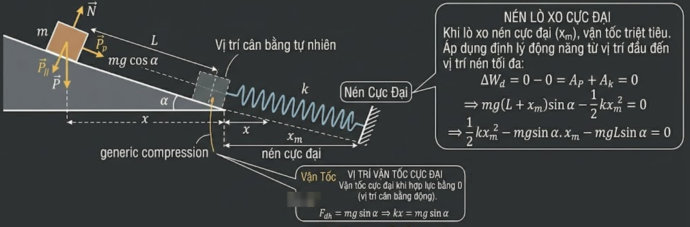

Bài 1: Hình lập phương trượt trên mặt phẳng nghiêng đụng lò xo
Bản chất vấn đề: Chuyển động của vật chịu tác dụng của lực thế (trọng lực, lực đàn hồi) và không có ma sát. Do đó, ta sử dụng Định lý động năng dưới dạng vi phân và tích phân để giải.

1 Xác định độ nén cực đại của lò xo ($x_m$)
- Thiết lập: Gọi $x$ là độ nén của lò xo. Theo định lí động năng, độ biến thiên động năng bằng tổng công của các ngoại lực tác dụng lên vật: $dW_d = \sum dA$.
- Khai triển:
- Công của trọng lực (thành phần song song mặt phẳng nghiêng): $A_P = \int_0^{L+x} mg \sin\alpha \, ds = mg(L+x)\sin\alpha$.
- Công của lực đàn hồi (ngược chiều chuyển động): $A_k = \int_0^x (-ks) \, ds = -\frac{1}{2}kx^2$.
- Phương trình: Khi lò xo nén cực đại ($x = x_m$), vận tốc triệt tiêu ($v=0$), do đó $\Delta W_d = 0 - 0 = 0$.
$$ 0 = mg(L+x_m)\sin\alpha - \frac{1}{2}kx_m^2 $$$$ \Rightarrow \frac{1}{2}kx_m^2 - mg\sin\alpha \cdot x_m - mgL\sin\alpha = 0 $$
Giải phương trình bậc 2 theo $x_m$, lấy nghiệm dương (với $a = \frac{mg\sin\alpha}{k}$):
$$ x_m = a + \sqrt{a^2 + 2aL} $$
2 Vị trí vận tốc cực đại
- Tại một vị trí $x$ bất kỳ, động năng là: $W_d(x) = \frac{1}{2}mv^2 = mg(L+x)\sin\alpha - \frac{1}{2}kx^2$.
- Bản chất toán học: Động năng (và vận tốc) đạt cực đại khi đạo hàm bậc nhất của nó theo $x$ bằng 0 (điều kiện cực trị).
$$ \frac{d(W_d)}{dx} = mg\sin\alpha - kx = 0 $$$$ \Rightarrow x = \frac{mg\sin\alpha}{k} = a $$
(Về mặt vật lý, đây chính là vị trí cân bằng động, nơi hợp lực tác dụng lên vật bằng 0: $mg\sin\alpha = kx$).